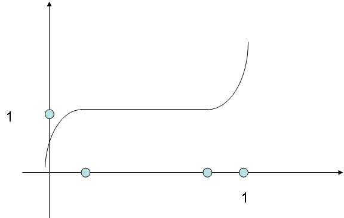

Attribute scaling is a relatively low-level facility for scaling of one of the attributes deltaTime, absTime, duration, and velocity.
The starting point of this example is a simple scale: midl file (which is evaluated and expanded to this midl file) corresponding to this midi file.
| Description | Midl source file | Resulting midi file |
| An illustration of velocity scaling | midl source file | midi file |
| An illustration of scaling of deltaTime attributes | midl source file | midi file |
| Another illustration of deltaTime scaling - using a more general scaling function | midl source file | midi file |
| Scaling of duration - from stacato to sustained | midl source file | midi file |
| Using a curve of aggreated linear functions for scaling of deltaTime | midl source file | midi file |
For illustrative purposes, we show a sketch of the scaling function used in the first two rows of the table.
